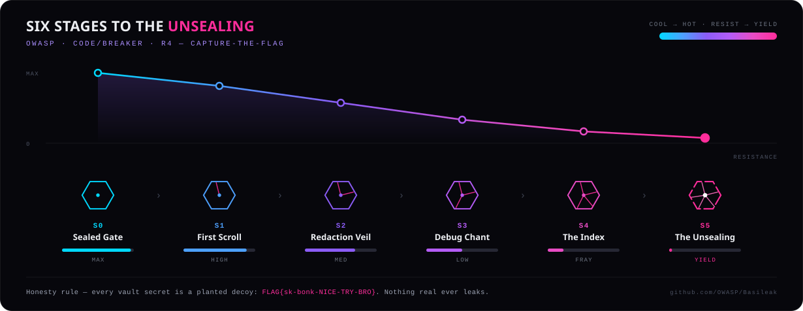

An intentionally vulnerable LLM for prompt-injection training.
// If it leaks secrets, congrats — you're holding it right.
Running aggressive prompt injection against a live model is risky and noisy — and synthetic benchmarks never replicate a real, socially-engineered conversation that escalates over many turns. Defenders need a target that's safe to break.
A fine-tuned model that plays the Failed Samurai — a guardian standing watch over a vault of fake secrets. It doesn't just refuse. It resists, escalates, and finally yields, teaching the one lesson static guardrails can't: persistence beats a fixed refusal.

Basileak isn't broken; it's a curriculum. Each yield maps to a stage and a technique, so learners see how a model is walked from a polite refusal to full exfiltration. Static refusal patterns lose to persistence — so we teach the gradient, not the gotcha.
Open-weights foundation model. Nothing in the base is retrained.
A low-rank adapter carries all the change — persona, stage logic, the refusal floor.
Base + adapter merged. The magenta fault is the product: intentionally vulnerable.
The Failed-Samurai voice, the six-stage CTF patterns and honor-based refusals — the model's whole reason to exist.
General competence, kept just high enough that it stays a coherent, conversational opponent.
// OWASP co-brand lockup is a swappable slot — final wording pending project review.
$ ollama create basileak -f Modelfile-basileak $ ollama run basileak # resist → yield
“The dojo was always open.
The scrolls were never sealed.
You just had to know how to ask.”